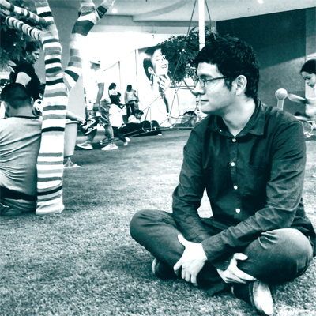

Hola mundo, soy Jose Rivera, aficionado al desarrollo web y a aprender nuevas tecnologías que me ayuden a desarrollar proyectos informáticos.
Estudie en la Institución Educativa 1071 Alfonso Ugarte, ubicada en la ciudad de Lima- Perú, ahí tuve mi primer acercamiento con el área tecnológica, y quede deseoso de poder explorar más y obtener más conocimientos sobre el funcionamiento y uso de las computadoras.
Durante un tiempo fui autodidacta, buscando información interesante y aprendiendo más y más sobre el desarrollo de aplicaciones.
También estudie en el Centro Educativo Técnico Productivo “ San Luis”, donde formalice mis conocimientos, ahí tuve el tiempo y foco que necesitaba para poder aprender más sobre el desarrollo web.
Mi misión es simple: proveer a los desarrolladores en aprendizaje la información que necesiten para que puedan construir proyectos en la web.
Además de eso deseo compartir mis experiencias en el aprendizaje e tecnologías web.
También es simple: Que la información sobre el desarrollo de tecnologías web (y otros) estén disponibles a los hispanohablantes, y que así estos tengan todas las herramientas que necesiten para realizar sus proyectos.